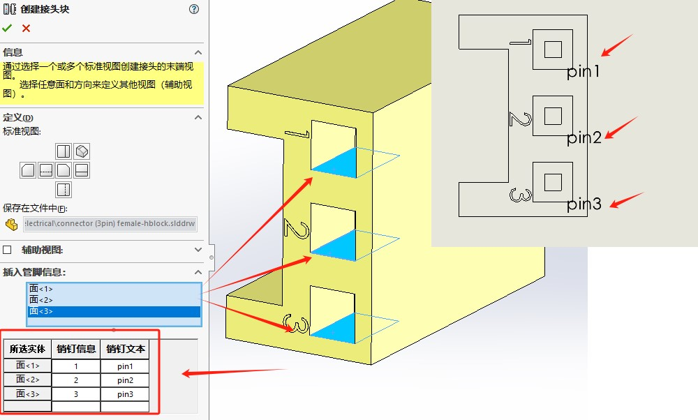

Routing电气件
电气零部件库
- 连接器
接头是连接线路与线路外部设备的特殊零件配件。 接头通常包含设备连接的配合参考。
- 线夹（线槽）
线夹是有助于按需定位线路的电气线路、管道线路或软管线路的零部件。 线夹可用作参考位置，或在生成线路期间拖至线路中。 这些零部件通常包含设备连接的配合参考。
- 端子接头
包含电气导管和电气连接点。 线路零部件只含电气导管步路点。 这些零部件通常包含设备连接的配合参考。
- 中接管

- 电气导管
电气导管是一类结合刚性管筒和电气的步路零件。终端连接器包括电导管和电连接点。内联路由组件只包含电导管路由点。这些组件通常包含设备连接的配套参考。
- 柔性电缆接头+带状电缆（线夹）
带状电缆零部件包括接头、插座和线夹。 这些零部件通常包含设备连接的配合参考。

电缆电线库
电线
电缆
电缆是伴随线路长度至草图末端或电气接头的零件。 与管道和管筒不一样，没有电缆“源”零件；电缆是在线路中生成的，并采用从默认的线路属性或“从/到”清单提取的规格。
电气设计要求
建议:使用单个cpoint的组件，而不是多个cpoint。单点连接器使布线更容易，因为中间不需要电线线束和每个连接器引脚。多个CPoint连接器所需的额外布线增加程序集的复杂性并影响性能。
建议:对于单CPoint连接器，将CPoint放在电线或电缆进入或离开连接器，例如在应变缓解装置的末端，如如下图所示。该点也可以从连接器的后方偏移。
CPoint中有一个额外的内部导线长度属性PropertyManager。设置长度值，使电线足够长，可以连接将CPoint指向最远的引脚
对于多个CPoint连接器，为每个引脚添加一个CPoint，并使用CPoint原理图引脚ID用于指示CPoint所代表的引脚。自动路由工具可以提供帮助将导线布线到每个连接器引脚。
建议:为每个连接器添加一个组件引用。当你有在一个设计中有几个相似的连接器，通常给出每个单独的实例是有用的描述性名称。右键单击连接器，选择Component Properties并输入在“组件属性”对话框的“组件引用”中使用唯一的名称。
Routing自定义-连接器
前期准备：你需要准备标准件接头模型。打开Routing库管理器，选择零部件向导的类型。使用【Routing Library Manage-电缆电线库向导】进行自定义。

步路功能点
1、通过旋转点（或圆弧）获取连接点的位置；
2、选择不同类型的线路会有不同的参数，具体可见：手册说明。这里以常见的单线模型做例子。
3、在“选取电缆”选项，可以选择有“电缆库.xml”定义好的电线匹配。

步路几何体
在电线/电缆中无需设置；可跳过直接下一步。
步路几何体适用于线路使用的特殊特征。 特征和尺寸的名称必须与向导指定的名称完全相同。 例如，弯管中的 BendRadius@ElbowArc 确定弯管每个配置的折弯半径。向导显示每个零部件必要及可选的几何体。
配合参考
参考之前零部件【参考几何体-配合参考】使用即可。例如本次模型的接线端子我将以接线头的圆边线作为参考配合边。

有效性检查
此对话框用于了解零件中是否缺少任何必要的项目，例如连接点和线路点。正常情况回提示：“遗失所需项：无 。零件建模已完成。按下一步继续“。
设计表检查
您可以使用设计表检查对话框来验证标准和自定义设计表条目。 您可以根据需要添加、编辑或删除列
电气件似乎也无此项需要，可以跳过。
零部件属性
您可以使用零部件属性对话框来查看零部件属性及其值。
对于具有多个配置的零件，请使用设计表。
保存完成
保存到步路设计库
保存还能选择“为缆束生成末端接头图例”
Routing自定义-线夹
其他类型
线夹
使用草图或轴定义线夹的（Rpoint）。
步路几何体：